It is in the very nature of the spear that it should manifest in such frustration. William O. Cord highlights:
[Wotan] fashioned his spear from a branch of the World Ash Tree. This origin is later confirmed by the Norns who also reveal that the god’s act set in motion the deterioration that ended in the death of the great tree which—once dead—was destined to become a kind of pyre whose flames would consume the gods and their universe. (Cord 55)
The downward motion of the Spear motive reflects not only the descent of the spear point onto its victim and of justice upon the contract-violator, but also the decline of the World Ash and of the gods, the inevitability of which is the source of Wotan’s frustration: he is constrained by his contracts, and therefore cannot prevent the decline. As Carl Dahlhaus argues in his discussion of the Nature motive and its derivatives, ‘[u]pward movement means evolution, downward means decline: inversion of the Nature motive produces the motive of the gods’ downfall’ (Dahlhaus 117–18). Similarly, the descents in the Spear and Frustration motives reflect this gradual downfall, which is, broadly speaking, the action of the Ring.
Dahlhaus contends that the Frustration motive ‘express[es] Wotan’s frame of mind in a situation in which the god is manifestly less than divine’ (Dahlhaus 208–09). I would argue, however, that it is his lack of Muth that manifests in this motive, the lack of the means to escape the contracts represented by the Spear motive, and as we shall see, Muth in the Ring has far less to do with divinity, and much more to do with humanity. Wotan’s frustration is an inherent part of his state as a god, and the antidote to it will come not from the divine, but from the human.
The frustration of Wotan’s plans in Act II of Die Walküre comes from Fricke, who insists that Siegmund is not independent of Wotan, but dependent on his protections, the sword and Brünnhilde: he lacks the Muththat would enable him to fulfill Wotan’s needs. It is for this reason that Wotan gives in to Fricke’s demands. In the Copenhagen production of Die Walküre, the dispute is inflected as a bureaucratic one (Holten). Wotan’s state of being ‘caught’ in his ‘own fetters’ is reflected in his pin-striped suit and the construction site setting, with workers – also in suits – showing him papers to sign and Wotan himself gesturing orders and making phone calls during the orchestral prelude to the second act (Wagner et al. 148). At this point, with the orchestra playing the grand Valkyrie motive, these trappings seem to signify the power of Wotan’s Valhalla enterprise, although this is undercut somewhat by the fact that Valhalla is apparently still under construction: the triumphant conclusion of Das Rheingold is thereby thrown into question.
As the scene progresses, the construction business aesthetic shows its true colors: Wotan is inflected as a businessman unable to act freely, bound by his contractual obligations to banks or shareholders, the very contracts we saw him triumphantly signing at the beginning of the act. The tombstone-like objects onstage, representing the mortals on the earth below, are reminiscent of a military operation, with Wotan as a battle commander rearranging models of troops on a map, but, shattering Siegmund’s stone in frustration, he reveals the illusion of total control given by this setup. He lacks the Muth to exercise control as he wishes. The fragments of the stone, still remaining on the stage beneath Siegmund’s feet as he goes to his death, prefigure his doom: he has no Muth, but is entirely dependent on Wotan, and will meet his fate at Wotan’s hands.
The action in Valhalla during Act II of Die Walküre consists of a series of hierarchical challenges. We begin in the established order, with the patriarch Wotan giving orders to his totally obedient daughter. She is at this point the ‘blindly elective tool of [his] will’, as he will later characterize her (Wagner et al. 155). Her only response to his orders is ‘shouting exultantly’in non-semantic words, all emotion and enthusiasm without critical engagement (Wagner et al. 140). However, Fricke reports an affront to her authority as a goddess by Siegmund, and her demands of Wotan in themselves constitute a challenge to his authority as ruler of all, herself included. Finally, Brünnhilde challenges Wotan by contesting his orders, the first of a series of challenges to his authority that will define her role in the Cycle.
In his anger at her disobedience to his commands, Wotan fails to realize how closely Brünnhilde matches the criteria he establishes for his needed hero:
A hero is needed who, lacking godly protection, breaks loose from the law of the gods: thus alone is he fit to perform that feat which, needful though it is to the gods, the god is forbidden to do. (Wagner et al. 144)
[A] hero I never stooped to help; who, unknown to the god and free of his favours, all unwitting, without his bidding, by his own need alone and with his own weapon might do the deed which I must shun. (Wagner et al. 152)
Brünnhilde breaks away from the gods and their laws by defying Wotan. She is not ‘unknown’ to Wotan, but the original German is ‘fremd’, implying ‘foreign’ or ‘new’. I would argue that by defying him, she becomes foreign to him: he discovers that she is not the ‘blindly elective tool’ that he imagined her to be, and she is ‘cast out from the kin of immortals’ – made anew as human – and ‘banished from [his] sight’ (Wagner et al. 182). Brünnhilde ‘against the god, would fight for [him]’, saving the unborn Siegfried from his wrath and eventually destroying the Ring, thereby preventing it from falling into Nibelung hands and instead bringing about the end that Wotan comes to desire (Wagner et al. 152). The word Muth is never applied to her in the sense of independence of mind, nor does Wotan recognize her as the hero he needs. But it is her Muth that allows her to break away from Valhalla, and bring about the end of the gods in Götterdämmerung.
Crucially, Brünnhilde’s rebellion is punished by incarnation. She becomes human, but, strikingly, the agency of this transformation is thoroughly ambiguous. Wotan states late on in the scene that he ‘kisses [her] godhead away’, but this seems to be figurative, since he earlier declares that ‘[i]t is not for me to punish you: your punishment you yourself ordained,’ and declares, ‘now henceforth be what you are even now’ (Wagner et al. 191, 181). There is a suggestion here that Wotan need take no action to cause her transformation: by virtue of what she has done, it has already taken place. This is not the case in the Copenhagen production, in which Wotan physically removes her wings, but the libretto does not appear to support this interpretation. Rather, we have Wotan, ‘caught’ in his ‘own fetters’ and ‘least free of all things living’, unable by divine contract to act as he desires, and in opposition Brünnhilde, incarnated seemingly automatically by her disobedience to divine law (Wagner et al. 148). Her exercise of Muth directly and metaphysically causes her transformation. The implication is that Muth is a definitively mortal trait: a god may not act freely, but rather to act freely is to be mortal.
The Copenhagen production continues to play with agency and freedom of action. During her confrontation with Wotan, Brünnhilde releases a dove, which returns in Siegfried as the Woodbird. This draws a direct line of causation from her actions in Die Walküre to those of Siegfried in his own eponymous opera. She saves Siegfried, unborn in Sieglinde’s womb, from Wotan’s wrath, and exhorts Sieglinde to take refuge in the forest near Fafner’s cave, because Wotan avoids the area. This brings Siegfried to Mime and the confrontation with Fafner, whose blood enables him to hear the Woodbird and follow it to Brünnhilde’s rock. The Copenhagen dove symbolizes this sequence of cause and effect, and also provides an explanation for the Woodbird’s knowledge of the Ring, the Tarnhelm, and Brünnhilde herself. Thus the agency for all subsequent events is drawn back to Brünnhilde’s actions in Die Walküre, as part of the feministic emphasis of this Brünnhilde-centric production of the Ring.
In Poutney’s 2018 Chicago production of Siegfried, the opposite emphasis is constructed. The Valhalla set descends above Siegfried’s head, revealing Wotan as a ventriloquist controlling a puppet-like soprano, who sings the Woodbird’s lines. All is being overseen and controlled by Wotan, which removes any sense of Muth from Siegfried’s actions. This is a consistent theme of the production, which presents Siegfried through the eyes of a child.[1] Everything is handed to Siegfried by stagehands dressed as mimes, who bring his tools for the forging scene by mail order from ‘Rheinlogistik’ – an Amazon/IKEA parody – and rush onto the stage to prop him up with cushions whenever he grows tired. Siegfried is transformed from a hero into a spoilt child, or perhaps a stereotypical millennial, the hero of his own story but oblivious to the ubiquitous aid given to him by his guardians, and by the modern world itself. In other words, he is a hero without Muth: nothing he does has any semblance of independence, for the stage hands are clearly visible providing for his every need, and Wotan is ready and waiting to give him his next quest after killing Fafner. This is the point in the Ring at which the chain of cause and effect is weakest, as the Woodbird smacks of deus ex machina: Siegfried understanding her voice is explained by the dragon’s blood, but how she knows about the Nibelung hoard or Brünnhilde, and why she counsels Siegfried, remain mysterious. As we have seen, the Copenhagen production solves this problem by planting the dove in Die Walküre, while the Chicago production does the reverse, expanding this weakness into an opera-length emphasis on Siegfried’s lack of Muth.
This is immensely important because, next to Brünnhilde, Siegfried presents the most significant of the hierarchical challenges we are discussing. He is the persona most unambiguously characterized by Muth. Free from Furcht (fear), he is willing to challenge anyone, and, empowered by Muth, he is capable of winning. This is most explicit in his confrontation with Fafner, which includes the following exchange:
Hast du Übermuth?
Muth oder Übermuth – was weiß ich?
Are you so foolhardy?
Hardy or foolhardy – what do I know?
(Wagner et al. 240)
Siegfried’s Muth is so extensive that it appears to Fafner to be Übermuth (cockiness). Siegfried, likewise, cannot tell which of the two concepts applies to him. Siegfried is stupid: ‘what do[es] [he] know?’ He has none of the craft or cunning that defines his two father figures, Mime and Wotan. Siegfried notes this himself when he recounts the forging of Nothung in Götterdämmerung: ‘what the artist himself could not do, the prentice’s courage [Muthe] was bound to achieve’ (Wagner et al. 340). Mime, the ‘Künstler’ (artist) could not forge the sword through all his Nibelung learning. Siegfried, the ‘Lehrling’ (apprentice) succeeded through his Muth. He is independent of learning, independent of craft: he does not think, but acts, with seemingly reckless abandon, and succeeds.
Just as the apprentice surpasses the artist, so the mortal grandson defeats the immortal grandfather and patriarch of all, in one of the Ring’s most dramatic hierarchical inversions. In Siegmund’s hand, Nothung had been forged by Wotan’s craft, and was thus undone by Wotan’s craft, breaking on his spear. Siegfried re-forges the sword not by craft, but by Muth, and thus it shatters even Wotan’s spear. As Fasolt is keen to remind Wotan in Das Rheingold, ‘What [he is, he is] by contracts alone’: his spear is powerful through the contracts carved into it (Wagner et al. 75). Siegfried, at this point, has never made a contract with anyone, but relies purely on Muth, whose superior power is too much for the spear.
The Copenhagen production offers a fundamentally contrasting interpretation: the Wanderer breaks the spear himself. This removes much of the sense of Muth from Siegfried’s role in the scene. Instead, the agency for the spear’s destruction is the Wanderer’s: he is in control, and decides that it is time for his contract-derived power to end. I would argue that this interpretation departs not only from the stage directions, but also from the implications of the libretto, however. The Wanderer exhorts Siegfried, ‘do not arouse my wrath today – it could ruin both you and me’ (Wagner et al. 262). In their endnote to this quotation, Spencer and Millington contrast Wagner’s interpretation, that ‘in spite of his supreme resolve – [Wotan’s] ancient pride is once more stirred’ with Spencer’s own, that ‘by provoking Siegfried into brushing him aside and allowing his spear to be shattered by his grandson’s sword…he prove[s] to himself that Siegfried is a free agent’ (Wagner et al. 369). I, however, find the former argument more convincing. Both Spencer and the Copenhagen production would have us believe that the confrontation between the Wanderer and Siegfried is pure dissemblance on the Wanderer’s part: he deliberately provokes Siegfried, knowing that his spear will be shattered. This does not accord, however, with Wotan’s behavior elsewhere in the Ring.
We have seen how, in Die Walküre, Wotan gives himself over to wrath against Brünnhilde, despite her entirely reasonable argument that she only did what he actually wanted her to do. Her disobedience angers him so greatly that he entirely overlooks how closely she matches his prescription for the hero who could save the gods from their shameful end at the hands of Alberich, as she is one who ‘against the god, would fight for [him]’. In Das Rheingold, when Wotan and Loge attempt to trick Alberich and win the Ring from him, we see Wotan ‘flying into a rage’ and telling Alberich, ‘[o]ut of my sight, you impious fool!’ It is Loge who remains calm, exhorting Wotan, ‘[d]on’t lose your head!’ and continuing to use flattery to successfully outwit Alberich (Wagner et al. 97). Allowing emotion, particularly anger, to get the better of him is one of Wotan’s consistent character traits. He makes numerous references to his own wrath, and the predominantly accepted etymology of his name is from Old Norse and later various Germanic words signifying wrath and fury (Cord 118). I am therefore inclined to believe him when he tells Siegfried not to arouse his wrath for fear of ruining them both, which, we must not forget, it eventually does. I cannot accept Spencer’s interpretation when, in Götterdämmerung, Waltraute reports that Wotan ‘sits, says not a word, silent and grave on his hallowed seat, with the splintered spear held tight in his hand’, hardly the reaction we would expect if the confrontation with Siegfried had gone as he desired (Wagner et al. 303).
By far more convincing are productions that interpret the confrontation as a battle in earnest, a challenge to the Wanderer’s authority by Siegfried, defended by the Wanderer with the last of his strength, but in vain. This is captured to some extent in Frank Castorf’s 2017 production at Bayreuth: during the scene, the Wanderer and Siegfried climb a set of stairs, with Siegfried always a flight above, symbolically representing his challenge to the Wanderer’s hierarchical authority, and anticipating his eventual victory (Castorf). Castorf has Siegfried simply snap the Wanderer’s spear across his knee, not even bothering to use his sword, which he ostentatiously lays aside. Muth here is not embodied by the sword, re-forged with Muth rather than craft or skill, but by Siegfried’s brute strength. But even here, the Wanderer makes no real attempt to stop Siegfried. He plants the spear in the ground and walks away, and does not move to prevent the Wälsung from breaking it. For an inflection in which the conflict is fully in earnest, we must turn to Chéreau’s 1976 production at Bayreuth (Chéreau).
This production seems most thoroughly to sponsor the Wagnerian interpretation, that Wotan’s ancient pride is stirred, compelling him to fight Siegfried despite his alleged intention to let his legacy pass to the Wälsung. Siegfried is extremely physical in his provocation of the Wanderer, not merely questioning ‘Why are you wearing so huge a hat’, but knocking it off his head, forcing the Wanderer to bend a knee and pick it up. When he attempts to rise once more, Siegfried grabs him, leaning over him, and almost seems to be helping a weak old man to his feet. He repeatedly lifts the Wanderer’s coat tails, as though searching for his manhood underneath (and this scene climaxes, after all, in the clash of the combatants’ phallic weapons). During their tussles, the Wanderer is thrust bodily across the stage, and when the spear is broken under Siegfried’s sword, the god falls to the ground. The scene is staged as a humiliation, in which the Wanderer is repeatedly forced to literally stoop and bend the knee to the younger man’s dominating physicality. Siegfried is inflected as petulantly childish, jumping up and down to see the light on Brünnhilde’s rock, picking up the splinters of the Wanderer’s spear and throwing them at him to kick the old god when he is down.
Thus the scene becomes a visible inversion of hierarchy before the audience’ very eyes. The Wanderer begins standing proudly before them, holding his spear imperiously, reveling in and laughing at Siegfried’s stories as he answers the Wanderer’s questions. As the scene progresses, the laughter and reveling baton passes to Siegfried, and the Wanderer is reduced to the obsolescence of the aged grandfather. Here we have the key to his motivations in the scene. Despite Siegfried’s importance to the Wanderer, they have never actually met until this moment. Knowing that he cannot aid Siegfried as he did Siegmund by providing the sword, the Wanderer has avoided any direct interaction with the younger Wälsung. Though the Wanderer has appeared at Mime’s home and Fafner’s cave to ensure that all is going according to plan and Siegfried will obtain the Nibelung hoard, he departed immediately prior to Siegfried’s arrival in both instances. Siegfried ‘never knew’ him, and was ‘deprived of [his] counsel’, just as Wotan prescribed for his needed hero (Wagner et al. 258).
I would argue that the Wanderer is sincere in his intentions as stated to Erda: he wants Siegfried to keep the Ring and waken Brünnhilde, who will ‘work the deed that redeems the world’ (Wagner et al. 258). He meets Siegfried because, characteristically governed by his emotions, he simply cannot resist doing so, but has to meet his heir once before retiring to await the end of the gods. This explains the series of questions he asks Siegfried, the answers to all of which he already knows. He takes pride in hearing the story of how all has occurred as he desired. He is surprised, however, by the provocations he receives from the Wälsung, who is arrogant and bullies the older man. ‘If you but knew me, brave-hearted youth,’ he says, ‘you’d spare me this affront. So dear to you, I’m sorely wounded by your threats’ (Wagner et al. 262). The Wanderer has failed to anticipate that Siegfried is not the idealized being he has imagined: his independence not only enables him to carry out extraordinary deeds, but also inclines him to treat everyone he encounters with equal disdain if they are not immediately forthcoming. Impatient with the Wanderer enjoying himself by asking Siegfried questions rather than answering the latter’s own, Siegfried shows him no more respect or less contempt than he extended to the similarly evasive Mime in the opening scene of Siegfried. Indeed, Siegfried warns the Wanderer, ‘[a]s long as I’ve lived an old man has always stood in my way: now I have swept him aside. If you offer me more of your stiff opposition, take care, I say, that you don’t share Mime’s fate!’ (Wagner et al. 261)
Wotan has not realized that the very Muth that makes Siegfried the perfect hero to reclaim the Ring also makes him intolerable as an heir. The very independence and lack of Furcht that enables him to battle dragons also means that he does not respect his elders, his hierarchical superiors, and feels no need to respect the Wanderer. The Wanderer is not, as he claims, ‘dear’ to Siegfried, as dear as Siegfried is to him. He calls him ‘mein Sohn’ (my son), just as Mime consistently did: even after Fafner’s death, when his true, murderous intent is audible by virtue of the dragon’s blood, Mime continues to call Siegfried ‘mein Sohn’ (Wagner et al. 261, 248). But both father figures are rejected: though both expect Siegfried to be grateful for all they have done for him, both are obsolete, surpassed by their child, and regarded with contempt. This is the conflict between authority – hierarchical superiority derived from the father’s status as author of the son – and Muth, independence of mind, which does not recognize authority’s claims upon the mind’s freedom or respect.
Hence we can take the Wanderer at face value when he warns Siegfried, ‘do not arouse my wrath today – it could ruin both you and me’. In the Chereau production, the Wanderer pronounces ‘dich und mich’ (you and me) haltingly, as though suddenly comprehending the danger of what may imminently occur. But Wotan is not capable of regulating his emotions, and when Siegfried continues to provoke him, he, ‘breaking out in anger,’ abandons his plans to leave his legacy to this upstart, and duels with him in earnest (Wagner et al. 262). This change of heart comes far too late, however. The sword is forged, full of the Muth that surpasses all of Wotan’s plots, schemes and contracts, and try as he might to defeat the upstart youth, Wotan’s spear is broken, and with it, his authority.
It is ironic, therefore, that Siegfried should meet his end as he does. Having broken Wotan’s spear, the symbol and embodiment of contracts, the Wälsung proceeds immediately through the flames to find his bride. Within the confines of Siegfried, this is largely presented as a further manifestation of the hero’s Muth. He penetrates the ring of fire, which keeps out all but the bravest of heroes, and forms a union with Brünnhilde, which, by her words, seems in itself to mark the end of Valhalla, the gods and divine contract: ‘Rend, you Norns, the rope of runes! Dusk of the gods, let your darkness arise!’ (Wagner et al. 275) Accordingly, the next opera takes its name from that very dusk of the gods and begins with the Norns’ rope rending. We might expect these events to constitute the greatest of our hierarchical inversions: the most human of all acts, the sexual consummation of love, in which Brünnhilde is not only incarnated but carnal, has cosmic ramifications, destroying the rope of fate and the entire pantheon of heathen gods. This should be the ultimate expression of Muth, in which humanity becomes totally independent from its divine overlords.
However, the next opera shows us how mistaken this impression is. ‘Only a few days pass between the beginning of Siegfried…and the end of Götterdämmerung,’ Dahlhaus tells us. ‘But short as the period is when measured by external time, the internal span is immeasurable’ (Dahlhaus 126). Dahlhaus understands this ‘gulf’ in terms of genre: Siegfried is a fairytale, a world apart from the tragic myth of Götterdämmerung, which ‘takes place outside the world of the fairy tale and destroys it’ (Dahlhaus 127–28). The divide may also be conceived, however, in terms of Muth. In Siegfried, the emphasis is on the carnality of the union between Siegfried and Brünnhilde: the imagery of fire predominates in the libretto, and no mention is made of a marital contract. In Götterdämmerung, Siegfried gives Brünnhilde the Ring, as a token of his promise of fidelity to her: for the first time he has entered into a contract. On his arrival at the Gibichungs’ halls, he immediately enters into a further two: his betrothal to Gutrune, and the bond of blood brotherhood with Gunther. Later, in response to Brünnhilde’s accusations, he swears on Hagen’s spear that she is lying.
In Siegfried, the hero’s strength derived from his Muth, his total independence from contracts such as those preventing Wotan from reclaiming the Ring. This independence manifested as a raw power that enabled him to break Wotan’s spear. But in Götterdämmerung– like Wotan in Das Rheingold– he gives the Ring away as part of a contract, compromising his Muth. Unlike Wotan, he breaks that contract by seizing it once again. His contracts with Gutrune and Gunther were broken as soon as spoken, on account of his marriage to Brünnhilde, as was his oath against Brünnhilde’s testimony. These violations are his downfall, and, ironically, are avenged at the point of a spear; not Wotan’s spear, but that of Hagen, the most deceptive and scheming personain the four-opera cycle. He declares this act of vengeance in his own statement of the Spear motive [second and third bars]:

'He was marked out by my spear, by which he'd falsely sworn.' (Wagner 346)
The third bar is converted from the diatonic scale of the original motive to a chromatic one, darkening the already forbidding motive in accordance with the corrupted justice of Hagen’s act. The chromaticism recalls Hagen’s impure blood, which ‘doesn’t flow truly and nobly’, but is ‘stubborn’ and ‘curdles’ like the scale compressed into semitone intervals (Wagner et al. 298). At the end of Act II, along with Gunther and Brünnhilde, Hagen had invoked Wotan as the god of oaths to oversee his revenge, but here he demonstrates through the distorted Spear motive that he has attempted to become Wotan, yet has achieved only a corrupted form of oath-keeping, spear-wielding justice in avenging a betrayal he himself caused using the forgetfulness potion. In the world that exists after the shattering of Wotan’s spear, in which, according to Brünnhilde, oaths are ‘an idle concern’ and Hagen must ‘[s]eek stronger means to arm [his] spear’, Hagen demonstrates a corrupted version of Muth in which he acts independently of Wotan by attempting to replace him (Wagner et al. 326–27).
This corrupted Muth is the logical conclusion of the series of hierarchical inversions we have seen. God bowed before giant, giant before man, and now man falls at the hand of base-born half-dwarf via a literal stab-in-the-back. The spear, upholder of contracts, is replaced by its parodic doppelgänger, the weapon of the lowest and most treacherous persona in the Ring. In pledging himself to Brünnhilde, Gutrune and Gunther, Siegfried has forsaken Muth and falls victim to Hagen’s spear, just as Wotan’s spear had fallen to him.
We are left, therefore, with Brünnhilde, humiliated but not defeated by Siegfried and the Gibichungs. Unlike Siegfried, she realizes she has been deceived by Hagen. Cast out by Wotan and rejected by Siegfried, she becomes the final model of Muth. Her union with Siegfried rends the Norns’ rope, she refuses to aid the gods despite Waltraute’s pleas, she conspires with the Gibichungs to kill the corrupted Siegfried, and finally she disposes of Hagen, the Ring and Valhalla in one last act, destroying all the bonds that restrain her Muth. Dahlhaus conceives of Götterdämmerung’s ending as a realization of the 1848 prose sketch, in which the gods’ purpose ‘will have been achieved when they have destroyed themselves in this human creation, namely when they have had to surrender their direct influence, faced with the freedom of human consciousness’ (Dahlhaus 141). Considering all we have discussed of Muth in the Ring, this seems entirely accurate. Muth, independence of mind, the freedom of human consciousness, has proven itself capable of overcoming the direct influence of the gods. Siegfried and especially Brünnhilde, the human offspring of gods, rebel against their progenitors, thereby fulfilling their purpose and rendering them obsolete.